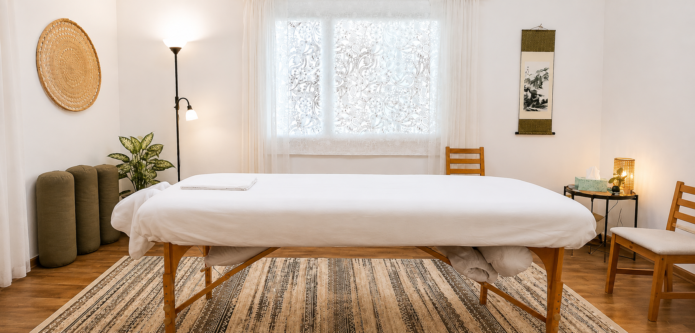

עיסוי משולב
לטיפול בכאב ומתח
החיים שלנו עוברים בגוף אחד בלבד.
הוא הולך איתנו את כל הדרך.
הוא אמור לאפשר לנו לעשות את הדברים הפשוטים של היום־יום, וגם להתמודד עם האתגרים המורכבים יותר שהחיים מזמנים לנו.
אבל לפעמים זה לא מרגיש ככה.
לפעמים מופיע כאב שמשבש את הכול ומשנה את החוויה.
ולפעמים זו בכלל לא תחושה של כאב. אולי הגוף מרגיש עמוס. אולי נוקשה. אולי הוא פשוט כבר לא מרגיש כמו פעם.
עיסוי משולב הוא דרך מצוינת לעזור לגוף להתמודד עם כאב, להפחית עומס ולאפשר לו לנוע בחופשיות ובנוחות.
בטיפול אני משלב שיטות שונות, בהתאם למה שהגוף שלך צריך באותו רגע.
אין טיפול קבוע, או נוסחה אחת.
המטרה היא להקשיב, להבין ולבחור את הדרך המתאימה, כדי לאפשר לגוף לעשות את מה שהוא יודע לעשות בצורה טובה יותר.
עלות הטיפול
כל תוספת של 15 דקות מעבר לשעה - 50 ₪.
שאלות ותשובות
למה עיסוי משולב?
לפעמים עיסוי רקמות עמוק הוא בדיוק מה שהגוף צריך, ולפעמים דווקא מגע עדין יותר. זה תלוי באדם, בסיבה שבגללה הגיע לטיפול, במה שהגוף מספר באותו יום, ואפילו במה שקורה תוך כדי הטיפול. לכן אין שני טיפולים זהים. כל טיפול נבנה מחדש, בהתאם למה שנכון לאותו רגע. הכלים בעיסוי המשולב מותאמים לתחזוקה, וגם לטיפול בכאב. טכניקות כמו טריגר פוינטס יכולות לעזור בשחרור שרירים תפוסים.
האם הטיפול כואב?
הרבה אנשים מגיעים בגלל כאב, ועם זה אנחנו עובדים. לרוב נתמקד גם באזורים תפוסים או רגישים, אבל לא צריך לסבול כדי להשתפר. יש מגוון רחב של טכניקות, והמטרה היא למצוא את הדרך שתאפשר לגוף להשתחרר. לפעמים זה כמעט לא מורגש, ולפעמים יש אי-נוחות מסוימת - אבל כזו שמרגישה "נכונה", ולא כמו סבל.
האם צריך להגיע רק כשכואב?
ממש לא. מומלץ להגיע ל"תחזוקה" - להפחית עומס, לשמור על תנועתיות טובה, ולאפשר לעצמך רגע שקט. יחד עם פעילות גופנית, זו השקעה פנסיונית מצוינת לטווח הארוך.
כמה זמן נמשך טיפול?
שעה. יש אפשרות לקבוע מראש גם טיפול של 75 או 90 דקות, בתוספת תשלום.
האם צריך הכנה מיוחדת לפני ההגעה?
לא, אבל מומלץ לפנות קצת יותר זמן ולא לאכול ארוחה כבדה לפני הטיפול. העבודה היא עם חמאת שיאה שלרוב נספגת מהר, אבל כדאי לבחור בגדים שלא נורא להכתים.
כל כמה זמן מומלץ להגיע לטיפול?
לכל אחד מתאים מרווח אחר. אם בוחרים בסדרה של טיפולים, כדאי לעשות את הטיפול השני בטווח של 7-10 ימים מהטיפול הראשון, ואז להחליט אם להמשיך בתדירות של פעם בשבוע, פעם בשבועיים, פעם בשלושה חודשים, או רק כשצריך.
מעולם לא עשיתי עיסוי - זה מתאים גם לי?
איזה כיף לנסות משהו בפעם הראשונה! אבל חוסר הוודאות לפעמים קצת מלחיץ - כמובן שמתאים, ואני מבטיח להסביר הכל כדי שהחוויה תהיה טובה ונינוחה.
האם אפשר לשלב עם נשימה וחשיפה לקור?
אפשר לשלב בין שני סוגי הטיפול בהתאם לצורך ולמטרת המפגש.
למי זה מתאים?
עיסוי משולב יכול לסייע בהפחתת כאב וסטרס, ובשיפור התנועה במגוון מצבים, בהם כאבי גב, כאבי צוואר וכתפיים, כאבי מפרקים, עומס שרירי, כאבים בעקבות פציעות ספורט ומצבים אורתופדיים שונים. כל טיפול מותאם למצב הגוף באותו יום, ומשלב טכניקות שונות בהתאם לצורך. מי שסובל מכאב או מתח כרוני - לא רק בגב, בצוואר או בכתפיים. גם אנשים בתקופות לחוצות שמרגישים "מנותקים" מהגוף שלהם, מי שמחפש טיפול לא-פולשני לצד טיפולים רפואיים אחרים, ומי שרוצה להעניק לעצמו זמן קבוע של האטה, הקשבה לגוף ותחזוקה.
אילו הסמכות יש לך בתחום?
אני מוסמך בעיסוי שוודי, עיסוי רקמות עמוק ועיסוי באבנים חמות, וכן בתרפיה מנואלית ותנועה, עיסוי רפואי בכיר, וטיפול אורתופדי הוליסטי. השילוב הזה מאפשר להתאים את הטיפול בדיוק למה שהגוף צריך בכל פגישה. במהלך לימודי הנטורופתיה הוסמכתי גם כמטפל בארומתרפיה ומטפל בכיר ברפלקסולוגיה.
חוויות מהטיפול
"מעסה מוכשר ורגיש. מבין ומכבד. מרגישה שתמיד מנסה למצוא את הדרך המתאימה ביותר לפתור את הבעיות (לומד את הגוף המסוים). הקליניקה החדשה, כמו הישנה, מקסימה ונעימה. ממליצה בחום"
מעיין גרשוני"שלומי הוא מטפל מקצועי, קשוב ויסודי, עם גישה רגועה ואכפתית. הוא יודע להקשיב, להבין את מקור הבעיה ולהתאים את הטיפול באופן אישי. ממליצה עליו בחום לכל מי שמחפש טיפול מקצועי ואנושי."
טלי שגיא"הלכתי לטיפול אצל שלומי - קודם כל יצאתי רפויה, מרחפת, רגועה, כל כך ששעה עברה כמו 10 דקות! וגם כמישהי שמטפלת בעצמי, הרגשתי כל כך בטוחה בידיים של אדם מקצועי ויסודי שיודע לקרוא את המצב של הגוף, לעבוד על הפאשיה בצורה מדהימה, ופשוט לשחרר כאב גם פיזי וגם נפשי. הכל נעשה ברגישות, בצניעות ובחיוך. פשוט מטפל מדהים!"
ענת ולדמן"עברתי אצל שלומי חוויה מתקנת. הגעתי כאובה מאוד, עם סיאטיקה קשה - הטיפול והיחס היו נהדרים, ואחרי כמה פגישות חזרתי לאיתני. ממליצה בכל פה"
עדנה בן-יוסף"שלומי מטפל מקצועי, קשוב, ידיים טובות. יש לו הרבה ניסיון ויכולת להתאים את הטיפול לצרכים שהוא מברר לפני הטיפול. תמיד אני יוצאת מרוצה, והגוף בהודיה על מגע מרפא. ממליצה בחום"
אסתר דר"הגעתי אליו עם כאבי גב מציקים, ותוך זמן קצר הרגשתי הקלה משמעותית. שלומי מעסה מקצועי ברמה הגבוהה ביותר - קשוב, אדיב וסבלני. ממליץ בחום לכל מי שמחפש טיפול איכותי באמת!"
אלעד תורג'מן